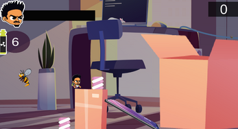
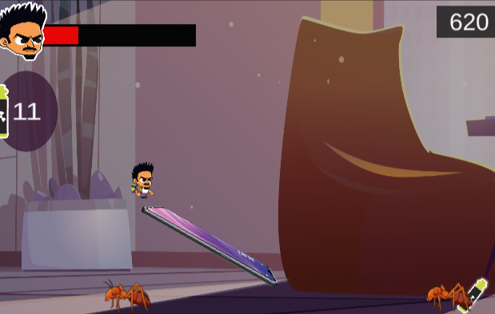

A 2D platformer where a young inventor, accidentally shrunk to the size of insects, must battle an overwhelming pest invasion inside his family's candy factory using his experimental insecticide.
Pest Invasion is a 2D platformer developed as a university project. Players take control of Ricky, the son of a candy factory owner, who accidentally shrinks himself while creating an experimental insecticide capable of eliminating any insect.
Now reduced to the size of the invading pests, Ricky must fight through swarms of ants, cockroaches, bees, and other insects while searching for a way to restore his original size.
The project combined classic platforming mechanics with enemy behaviors designed to create increasingly dynamic gameplay encounters.
Gameplay Programmer, Game Designer
During development, I focused on implementing enemy behavior systems and gameplay interactions. My main responsibilities included:
Instead of giving every enemy the same movement pattern, we introduced different behaviors to encourage players to adapt their strategy.
Simple patrols provided predictable obstacles, while sinusoidal movement created less predictable enemies that increased the challenge without requiring complex AI systems. This approach allowed us to create gameplay variety using relatively simple mathematical concepts.
One of the project's biggest challenges was intentionally minimizing the use of Unity's built-in components. Rather than relying on existing engine solutions whenever possible, I challenged myself to build gameplay systems through custom C# scripts. This approach required a deeper understanding of both Unity and the mathematical principles behind character movement.
Implementing sinusoidal enemy movement also strengthened my ability to translate mathematical formulas into gameplay mechanics.
Developing enemy behavior systems demonstrated how small logic changes could significantly affect gameplay difficulty and player experience. It reinforced the importance of testing movement patterns, collision behavior, and gameplay consistency across different enemy types — an analytical mindset that translates directly to technical QA and gameplay validation.
This project significantly strengthened my programming fundamentals. More importantly, it helped me understand that mathematics is not just an academic subject but an essential tool for creating engaging gameplay systems.
Building my own gameplay components instead of depending solely on engine features also gave me greater confidence when designing reusable and maintainable systems.
This project changed the way I approached gameplay programming. Instead of asking what Unity could do for me, I started asking how I could build the system myself. That shift in mindset helped me better understand both programming and game mechanics.

